Cuarto año · 2026
Viaje Solidario a Junín
Planificación de actividades y talleres, organización de donaciones y trabajo en comunidad. Un proyecto para poner en práctica empatía, creatividad, compromiso y trabajo en equipo.
Un recorrido atravesado por las ganas de aprender, acompañar a otros y encontrar nuevas formas de poner el cuerpo, las ideas y las fortalezas al servicio de algo compartido.
Portfolio profesional docente · Melina Alonso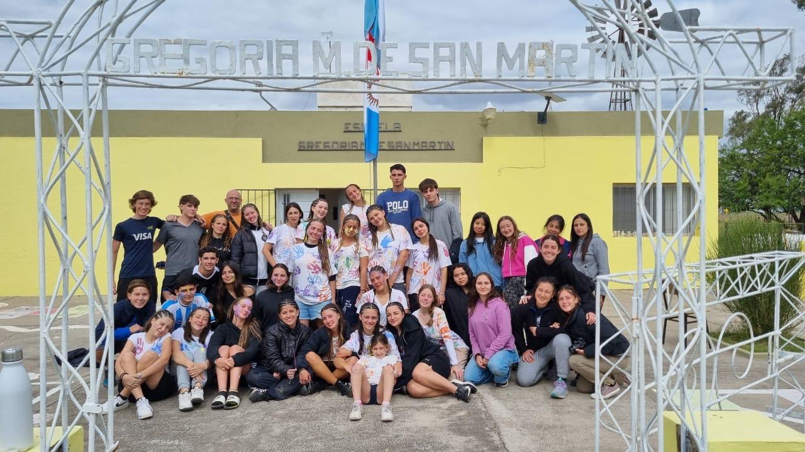
Soy inquieta, aventurera y me gustan los desafíos. Disfruto hacer deporte, entrenar, viajar, compartir tiempo con amigos, bailar, cantar, cocinar, aprender cosas nuevas y ayudar siempre que puedo.
Soy de escuchar mucho más de lo que hablo y de encontrar en cada experiencia alguna oportunidad para aprender.
Mi camino hasta la Educación Física no fue del todo lineal. Soy Maestra Mayor de Obras, egresada de una escuela técnica (de ahí viene también mi instinto de Bob el Constructor). Empecé Ingeniería, pero durante el primer año me di cuenta de que me gustaba mucho más el movimiento que los números. Decidí cambiar de rumbo y apostar por aquello que realmente me apasionaba.
También soy guardavidas y el deporte siempre fue una parte importante de mi vida. Hoy, si tuviera que definir mi propósito, diría que es bastante simple: hacer que cada vez más personas se muevan. Me apasiona el entrenamiento, pero especialmente la posibilidad de transmitir una cultura del movimiento, generar hábitos y despertar en otros las ganas de mantenerse activos.
Creo que trabajar con adolescentes me da la posibilidad de ser parte de algo mucho más grande que una tarea o una materia: acompañar el proceso de construcción de su persona. Es una etapa en la que empiezan a descubrir quiénes son y a construir el tipo de personas que quieren ser. Poder acompañarlos, generar vínculos y aportar alguna herramienta para ese camino es una de las cosas que más valoro.
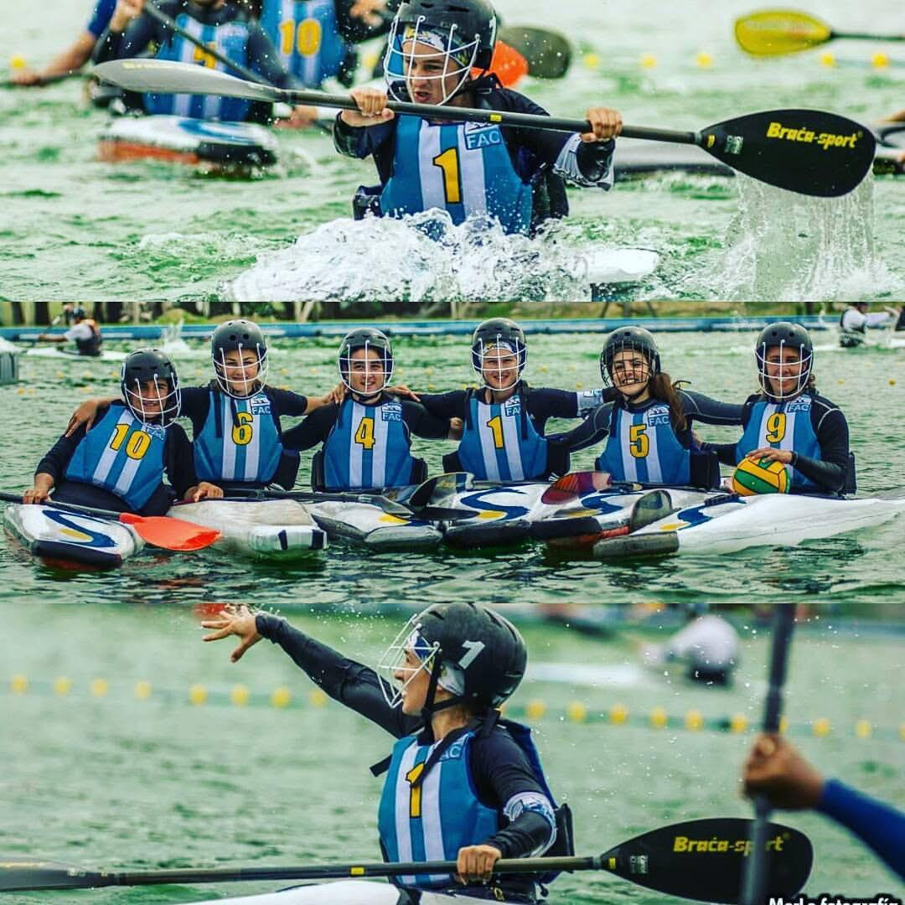
“Hacer que cada vez más personas se muevan”.Un propósito que atraviesa mi vida y mi trabajo
Hoy mi trabajo en Northfield está en la preceptoría. Aunque mi formación es en Educación Física, todavía no estoy dando clases de esa materia en el colegio.
Creo que una de las partes más valiosas de mi trabajo como preceptora es la posibilidad de construir vínculos con los estudiantes. Disfruto conectar con ellos, generar confianza, construir esos códigos compartidos que hacen que el vínculo sea cercano, siempre desde el respeto.
Me gusta que sepan que pueden acercarse, que hay alguien dispuesto a escucharlos y acompañarlos. Entiendo la preceptoría como mucho más que estar presente en el día a día: es también ser parte de una etapa importante de sus vidas, conocerlos y acompañarlos en sus procesos.
Al mismo tiempo, considero que el orden y la organización son fundamentales para que todo eso funcione. Soy una persona muy organizada, responsable con las tareas administrativas y me gusta tener todo al día. Creo que poder combinar esa responsabilidad con una mirada cercana y humana es parte de lo que define mi manera de ejercer el rol.
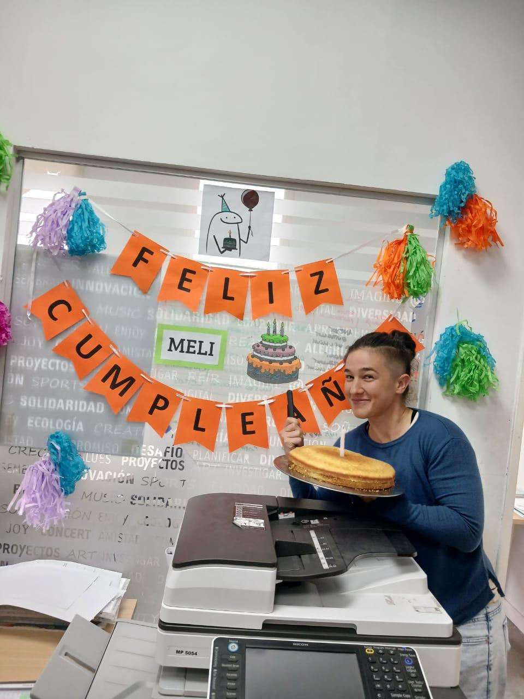
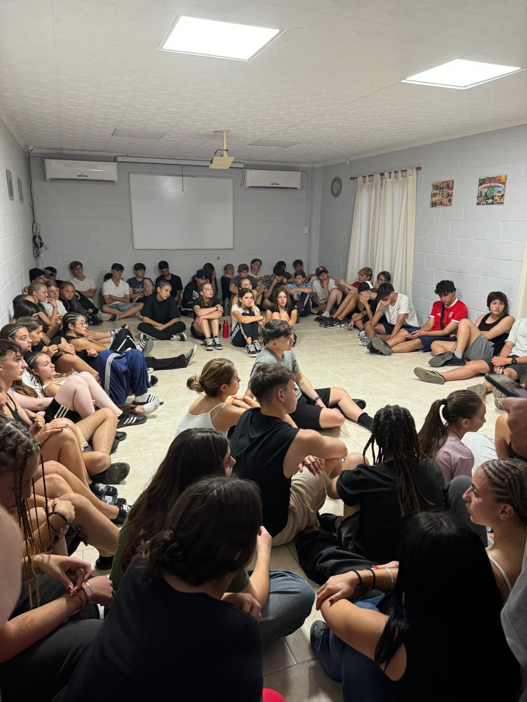
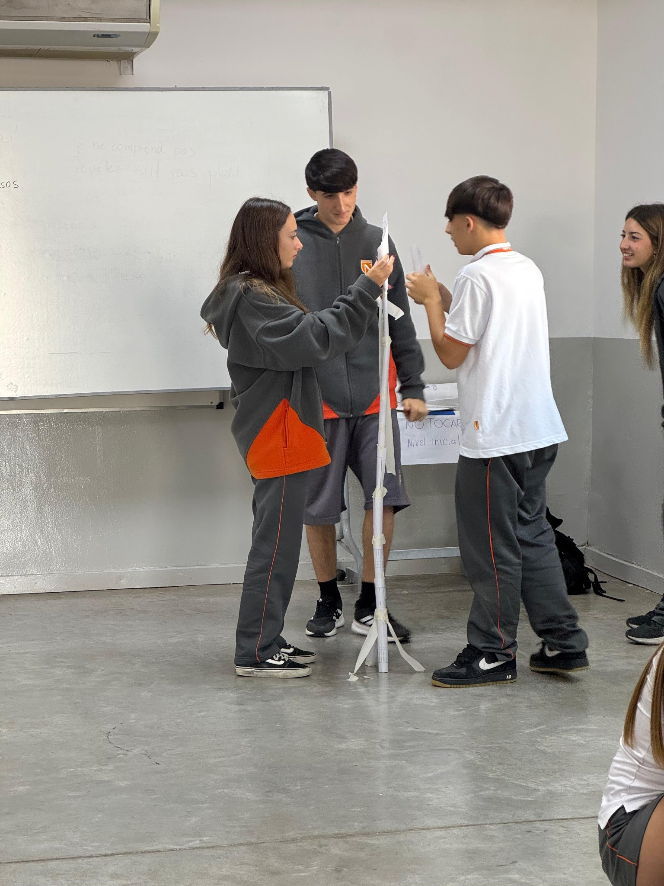
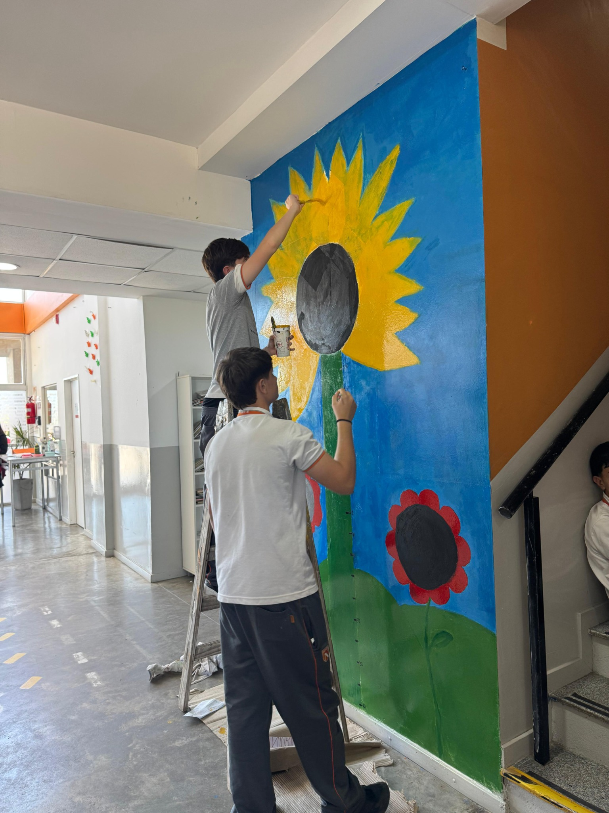
Para mí, Ciudadanos es mucho más que una materia: es un espacio que nos humaniza.
Es una propuesta que invita a los estudiantes a aprender haciendo, a trabajar con otros, a resolver problemas, a pensar críticamente y, sobre todo, a conocerse un poco más. Busca que puedan desarrollar herramientas que les sirvan no solamente dentro del colegio, sino también en la vida.
Hay una idea que me gusta mucho para explicar lo que representa este espacio: Ciudadanos es como ese cuartito de casa donde guardamos cosas que no sabemos muy bien para qué sirven, pero intuimos que en algún momento las vamos a necesitar. Es la materia que nos ayuda a entender para qué sirven esas herramientas y cuándo podemos volver a buscarlas.
“Ciudadanos es ese cuartito donde guardamos herramientas que algún día vamos a necesitar”.La mochila de herramientas para la vida adulta
Planificación de actividades y talleres, organización de donaciones y trabajo en comunidad. Un proyecto para poner en práctica empatía, creatividad, compromiso y trabajo en equipo.
Construcción del perfil de liderazgo y proceso de elección de Captains y Prefects. Un trabajo compartido para dar sentido, organización y continuidad a la propuesta.
Una propuesta para reconocer las habilidades desarrolladas durante la escuela, identificar lo que queda por aprender y construir una mochila de herramientas para la vida adulta.
En 2026 uno de los grandes desafíos fue organizar y acompañar el Viaje Solidario a Junín. Desde la planificación de actividades y talleres hasta la preparación de donaciones, fue un proyecto que permitió poner en práctica el trabajo en equipo, la empatía, la creatividad y el compromiso con otros.
También pude aportar desde mis propios conocimientos e intereses, especialmente en las actividades vinculadas al movimiento, la cocina y la construcción. En los dos años anteriores acompañé viajes solidarios como preceptora, incluso cuando no estaba a cargo de Ciudadanos.
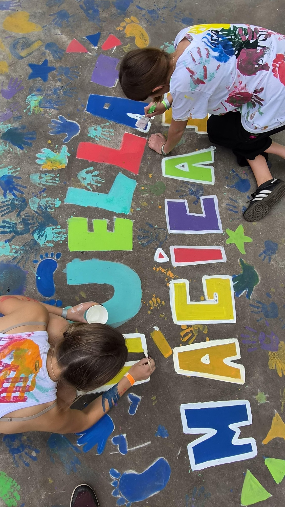
Trabajamos en la construcción del perfil de liderazgo y en el proceso de elección de Captains y Prefects. Fue un proyecto que me entusiasmó especialmente porque pudimos darle un sentido y una continuidad a una propuesta que necesitaba mayor organización.
Cada docente aportó desde sus fortalezas y conocimientos para ayudar a los estudiantes a descubrir qué significa liderar, representar y comprometerse con una comunidad.
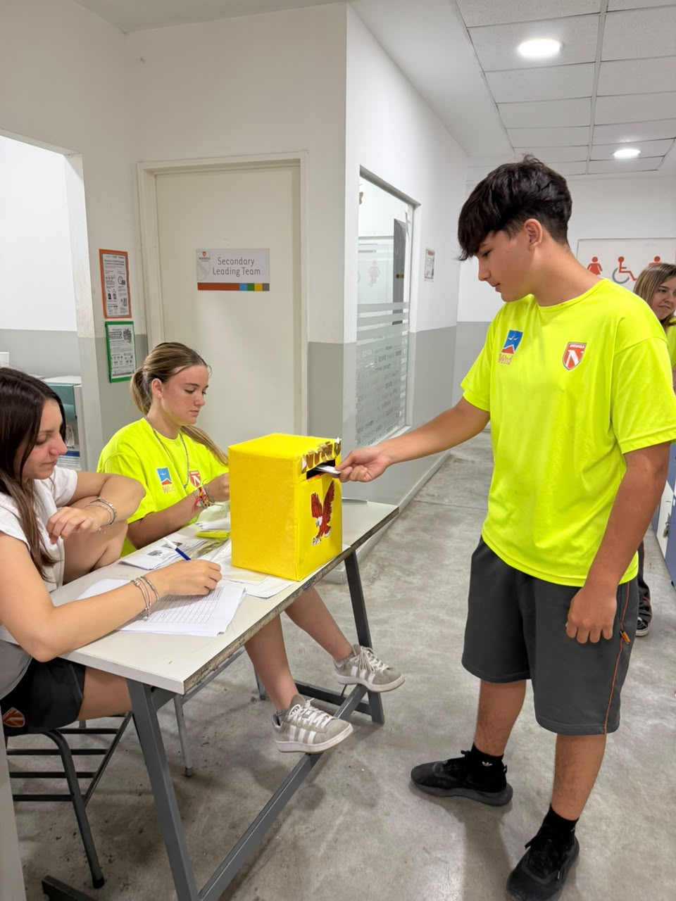
“Lo más importante no es solamente lo que logramos enseñar, sino las personas que ayudamos a formar”.
Una de las cosas más interesantes de Ciudadanos es el trabajo compartido entre docentes. Planificar, tomar decisiones y construir acuerdos con otros no siempre es sencillo, especialmente cuando tenemos miradas y formas de trabajar diferentes. Al principio fue un desafío encontrar acuerdos y definir roles. Con el tiempo fuimos encontrando nuestra manera de complementarnos, dividir tareas y confiar en el aporte de cada uno. En cuarto año Pablo asumió la coordinación general y, en quinto, fui tomando un rol más organizador para darle estructura y continuidad al proyecto.
En sexto año, el Portfolio de Vida invita a los estudiantes a mirar las habilidades que desarrollaron durante su recorrido escolar, reconocer lo que todavía necesitan fortalecer y pensar qué herramientas se llevan para la vida adulta. Junto a una compañera presentamos esta experiencia en el Congreso Interfaces de la Universidad de Palermo, bajo el título Historias por contar.
Ver presentación · Historias por contarCreo que la formación profesional no termina con un título. Para mí, seguir aprendiendo es una parte importante de mi trabajo y también de mi manera de ser. Soy inquieta, me gusta explorar cosas nuevas y buscar herramientas que después pueda llevar a la práctica.
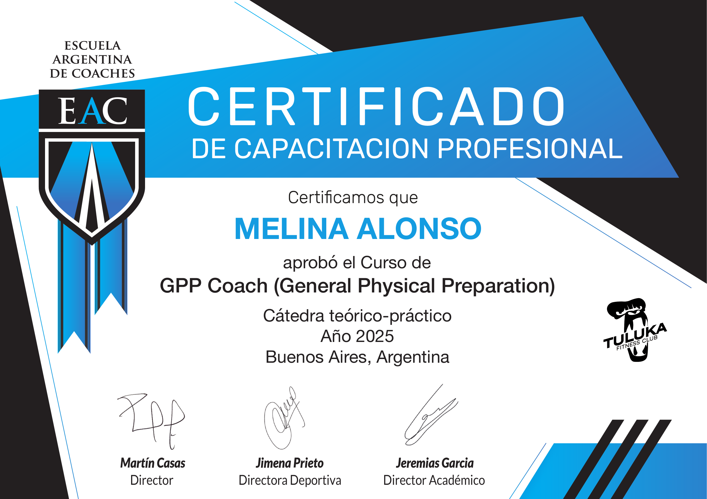
Durante 2025 realicé y aprobé la formación teórico-práctica de GPP Coach, que me permitió ampliar mis conocimientos sobre preparación física y seguir profundizando en un área que me apasiona: el movimiento y el entrenamiento. Ver certificado.
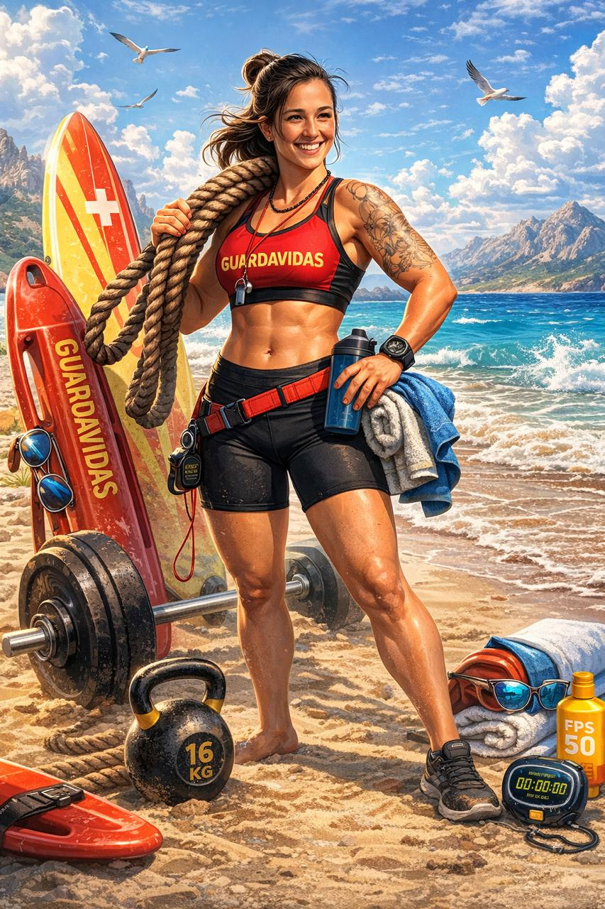
Me formé como guardavidas, una experiencia que me permitió desarrollar conocimientos y habilidades vinculados al cuidado, la prevención y la seguridad en el medio acuático.
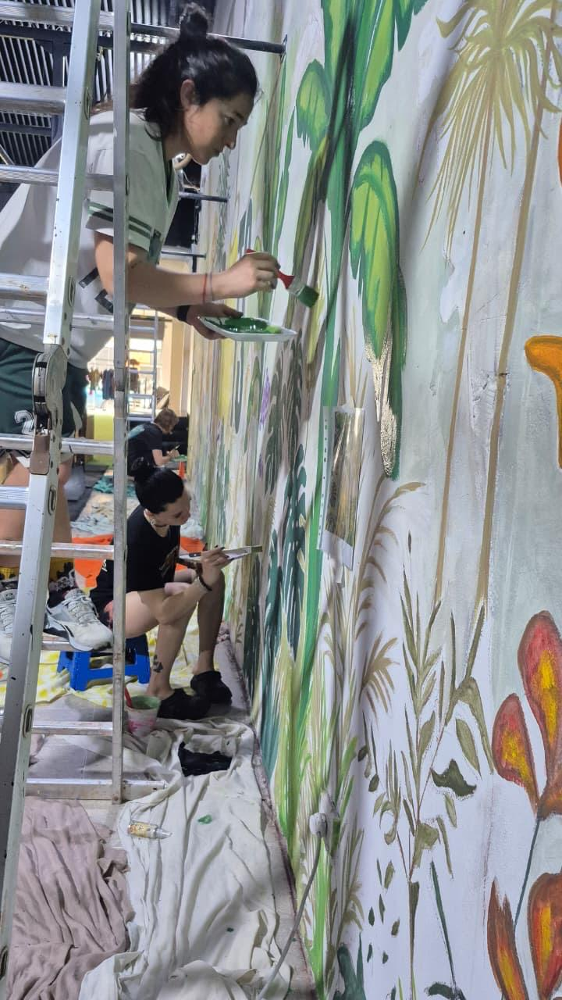
Soy egresada de una escuela técnica con el título de Maestra Mayor de Obras. Aunque mi camino profesional terminó llevándome hacia la Educación Física, esa formación también forma parte de mí y de mi manera de resolver, crear y enfrentar desafíos. Mi instinto de Bob el Constructor tiene una explicación.
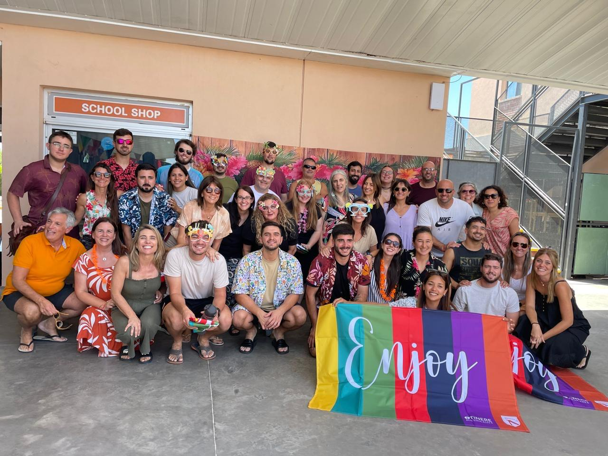
Hace más de un año que estoy estudiando inglés. Es un desafío que decidí asumir porque quiero seguir creciendo y, especialmente, porque me gustaría poder utilizar el idioma en nuevos espacios dentro del colegio. La observación de clase de Entre Pares también reforzó mis ganas de animarme a dar ese paso.
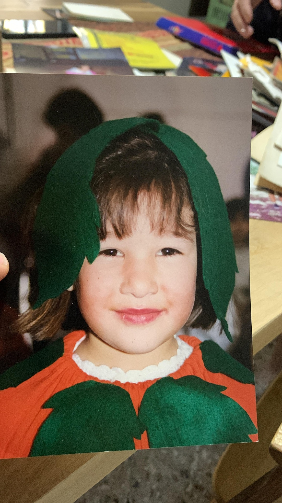
Junto a una compañera tuve la oportunidad de presentar el proyecto de sexto año Portfolio de Vida, bajo el título “Historias por contar”. Al principio me daba cierto temor presentar nuestro trabajo en un ámbito universitario, pero la confianza y el acompañamiento de nuestra coordinadora me impulsaron a animarme. Me llevo la satisfacción de haber compartido una experiencia construida en equipo y de haber asumido un nuevo desafío.
Ver presentación ↗Durante este año participé de tres cápsulas de Ta-Te-Ti que me dejaron herramientas y nuevas formas de pensar situaciones que aparecen en el día a día del colegio. Aunque cada una abordó temas diferentes, siento que las tres se complementan: me ayudan a entender mejor lo que sucede, revisar mi propia manera de actuar y encontrar nuevas formas de acompañar a los estudiantes.
Aprender a escuchar antes de reaccionar. De las tres cápsulas, esta fue la que más me movilizó y con la que más pude conectar desde mi trabajo cotidiano. Me ayudó a mirar de otra manera situaciones que aparecen en la convivencia escolar, especialmente conflictos, enojos, dificultades con los límites o momentos en los que tenemos que intervenir. Una de las ideas que más me quedó es que muchas veces las palabras o las acciones de los demás no tienen que ver directamente con nosotros, sino con algo que les está pasando, que sienten o que necesitan expresar. Esto me permite intentar no tomar ciertas situaciones como algo personal y, en lugar de reaccionar inmediatamente, detenerme a escuchar y tratar de comprender qué hay detrás. Comprender lo que siente el otro no significa estar de acuerdo con todo ni dejar de poner límites. Podemos corregir y sostener una norma sin descalificar ni dejar de tener en cuenta a la persona que tenemos enfrente.
Me permitió conocer y organizar distintas rutinas de pensamiento, entendiendo que no se trata solamente de proponer actividades, sino de tener claro qué quiero que los estudiantes piensen, comprendan o se pregunten. Me llevo herramientas para planificar propuestas con mayor intención, generar preguntas que inviten a reflexionar y hacer visible el proceso de pensamiento, no solamente el resultado.
Me acercó a herramientas de regulación emocional que considero útiles tanto para uno mismo como para acompañar a otros. Me hizo pensar en la importancia de reconocer lo que nos pasa, gestionar nuestras emociones y encontrar respuestas más conscientes frente a situaciones que pueden generar tensión o frustración.
También aprendo mirando cómo mis compañeros y superiores resuelven situaciones. Soy observadora y muchas veces encuentro ideas valiosas en sus maneras de intervenir, organizarse o acompañar a los estudiantes. Creo que el desarrollo profesional también se construye en esos intercambios cotidianos, incluso cuando no forman parte de una capacitación formal.
“Seguir aprendiendo también implica revisar nuestras propias prácticas”.
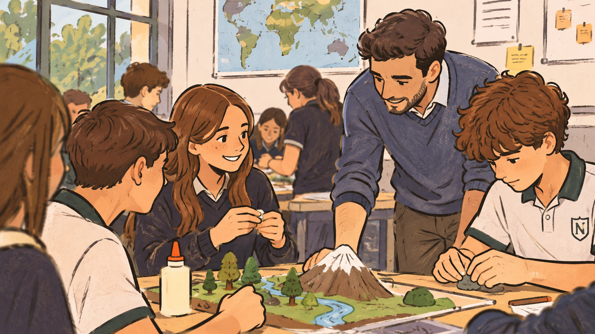
Durante este año tuve la oportunidad de observar una clase de Social Studies de primer año, a cargo del profesor Peralta. Los estudiantes estaban trabajando en grupos en la elaboración de maquetas para la Feria Multitemática.
Fue una experiencia que me permitió detenerme a mirar otras formas de enseñar y, sobre todo, de vincularse con los estudiantes. Algo que me llamó especialmente la atención fue la cercanía del profesor con los chicos. A pesar de que había mucho movimiento y todos estaban trabajando en diferentes producciones, lograba mantener un clima de orden y respeto sin necesidad de levantar la voz. Recorría los grupos, interactuaba con todos, ofrecía ayuda y se involucraba en las actividades, incluso colaborando con la construcción de algunas formas con plastilina.
Me llevé una reflexión que me parece muy valiosa: la autoridad también se construye desde el vínculo, la confianza y el respeto mutuo. El orden no necesariamente tiene que surgir de la imposición; también puede construirse a partir de cómo nos relacionamos con los estudiantes.
Por otro lado, hubo algo que me resultó especialmente inspirador: verlo dar su clase en inglés. Me llamó la atención su seguridad para preguntar, responder e interactuar en otro idioma. Esa experiencia me dio ganas de seguir estudiando inglés y, sobre todo, de animarme a dar el paso de utilizarlo algún día dentro del colegio.
Me quedo con la idea de que siempre podemos aprender de cómo trabajan los demás. A veces, observar una clase nos permite encontrar pequeñas cosas que queremos incorporar y otras que nos animan a intentar algo nuevo.
Cuando pienso en 2027, me gustaría que sea un año de crecimiento, nuevos desafíos y oportunidades para seguir descubriendo hasta dónde puedo llegar.
Uno de mis principales objetivos es seguir mejorando mi inglés. Hace más de un año que vengo estudiándolo y me entusiasma la posibilidad de llevar ese aprendizaje a la práctica dentro del colegio. Si se aprueba el proyecto, me gustaría preparar a los alumnos para el IGCSE de Educación Física y, por qué no, tener la oportunidad de participar de algún viaje a UK.
También quisiera empezar a sumar horas de Educación Física en Northfield. Siento que tengo mucho para aportar desde mi formación y mi pasión por el movimiento, y me gustaría encontrar más espacios donde pueda desarrollar esa parte de mi profesión. Estoy dispuesta a asumir nuevas oportunidades de crecimiento docente, incluso si eso implica dejar mi puesto actual de preceptora.
En Ciudadanos, mi desafío es seguir construyendo un proyecto cada vez más organizado y con mayor continuidad. En cuarto año, me gustaría incorporar un taller de construcción o mantenimiento que prepare a los estudiantes para algunas de las tareas que realizan durante el Viaje Solidario. En quinto, quisiera potenciar todo lo que logramos con el proyecto de liderazgo y las elecciones de Captains y Prefects. También me entusiasmaría explorar la posibilidad de recuperar el espacio de Ciudadanos en sexto año, retomando el trabajo con el Portfolio de Vida y la construcción de esa mochila de herramientas para la vida adulta.
Seguir formándome y llevar el idioma a la práctica. Me entusiasma la posibilidad de preparar a los alumnos para el IGCSE de Educación Física en Northfield y, si se presenta la oportunidad, participar de algún viaje a UK.
Empezar a sumar horas de Educación Física en Northfield y encontrar oportunidades de crecimiento dentro del área, incluida la posibilidad de habilitar el examen internacional de la materia.
Sumar un taller de construcción o mantenimiento en cuarto, potenciar el proyecto de liderazgo de quinto y explorar la recuperación de Ciudadanos en sexto.
Para poder avanzar, me gustaría encontrar en el colegio mayores oportunidades de crecimiento dentro del área de Educación Física. Me entusiasma especialmente la posibilidad de que se habilite el examen internacional de esta materia y poder formarme para asumir el rol de docente del IGCSE. También considero importante seguir construyendo espacios donde el crecimiento profesional, las responsabilidades y el reconocimiento del trabajo realizado puedan acompañarse mutuamente. En Ciudadanos, necesitaría tiempo y espacios de planificación compartida para poder darle mayor estructura y continuidad a los proyectos, así como el acompañamiento y los recursos necesarios para desarrollar nuevas propuestas.
Creo que voy a saber que avancé si al terminar el año me encuentro en paz con lo que hice y con el lugar que ocupo. Si siento que crecí, que pude animarme a nuevos desafíos y que disfruté del camino, sin terminar el año con la sensación de que fue pesado. Me gustaría poder mirar hacia atrás y reconocer que aporté, aprendí y construí cosas valiosas, pero también que pude encontrar un equilibrio entre mi desarrollo profesional y mi bienestar personal.
Hay una parte de mi vida que está muy conectada con quién soy: el deporte, los desafíos y las ganas de hacer cosas.
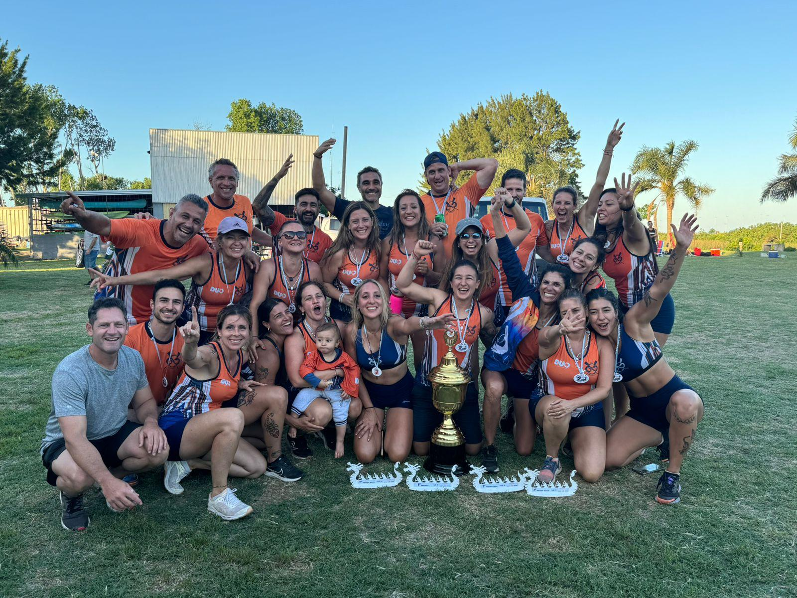
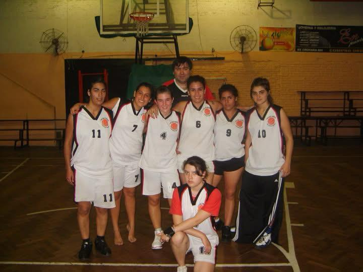
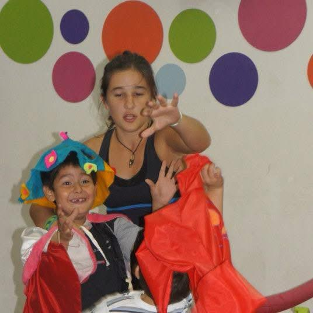
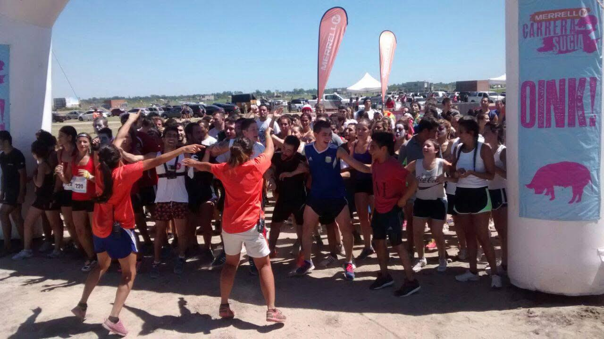
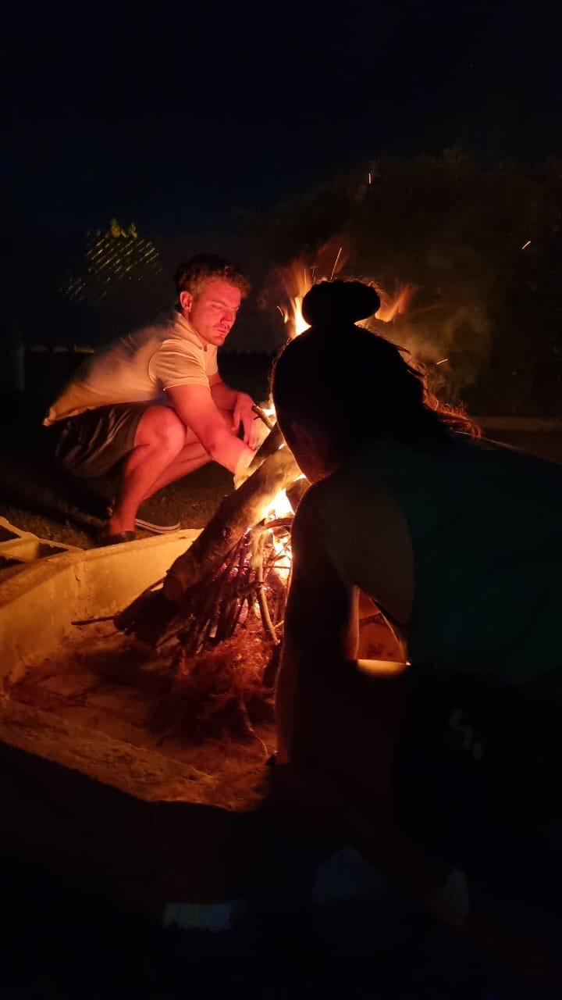
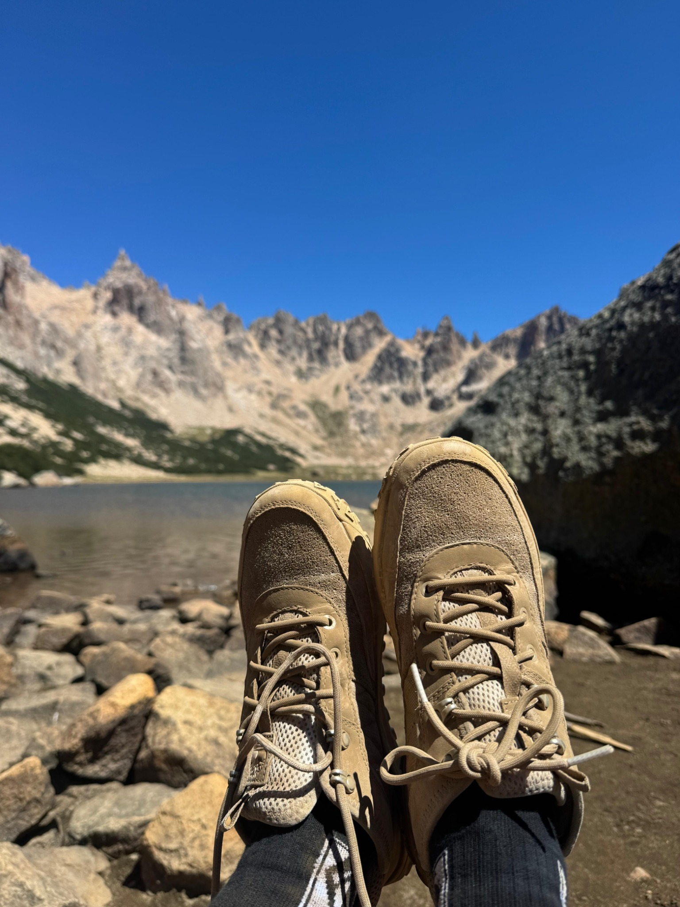
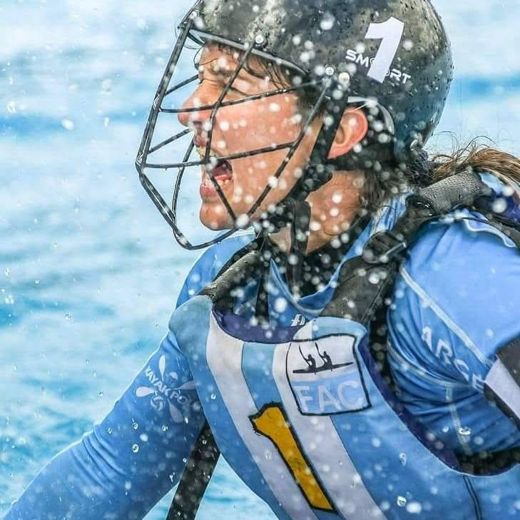
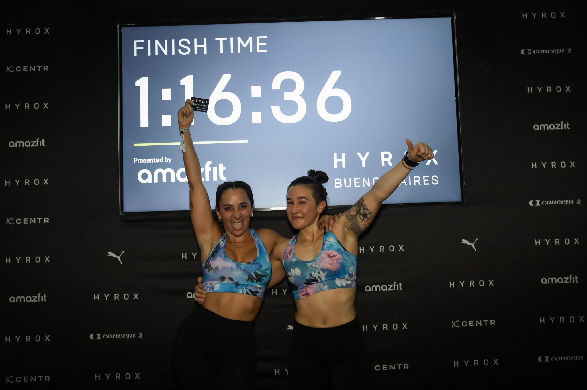
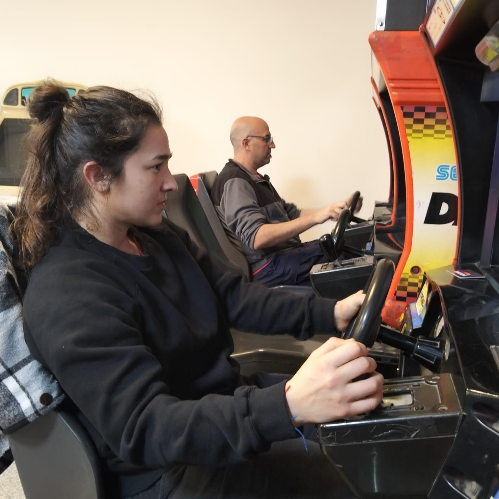
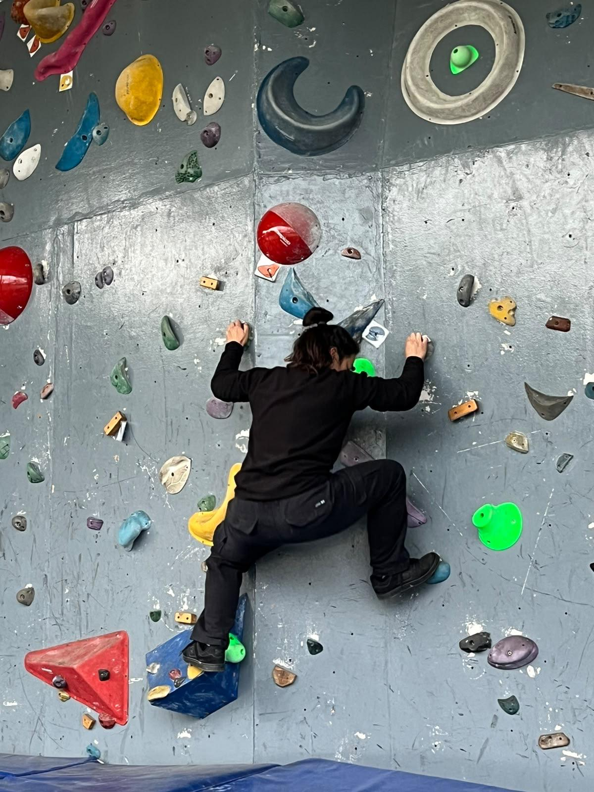
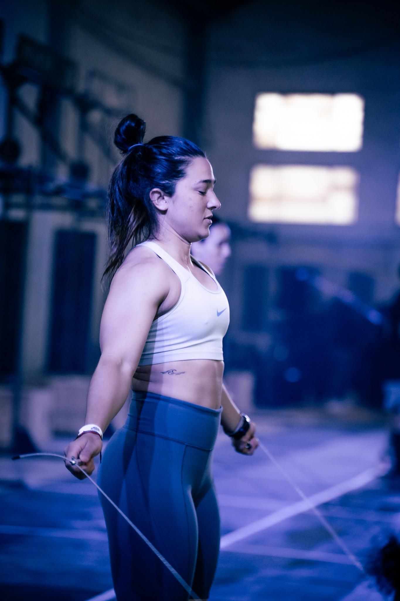
El movimiento siempre fue mucho más que una actividad para mí. Me llevó a conocer personas, viajar, competir, trabajar en equipo y vivir experiencias que me marcaron. Tuve la oportunidad de ser jugadora y capitana de la Selección Argentina de Kayak Polo, hoy sigo vinculada al deporte desde el Dragon Boat, y encontré en el crossfit un nuevo desafío.
En 2025 cumplí otro de esos sueños que requieren mucho trabajo y un poco de locura: abrir mi propio gimnasio junto a una socia. Un proyecto que representa mi pasión por el entrenamiento y mis ganas de ayudar a otras personas a incorporar el movimiento a sus vidas.
Son experiencias diferentes, pero todas tienen algo en común: me enseñaron a comprometerme, confiar en los demás, asumir desafíos y animarme a ir por más. Y creo que todo eso también forma parte de mi manera de educar.